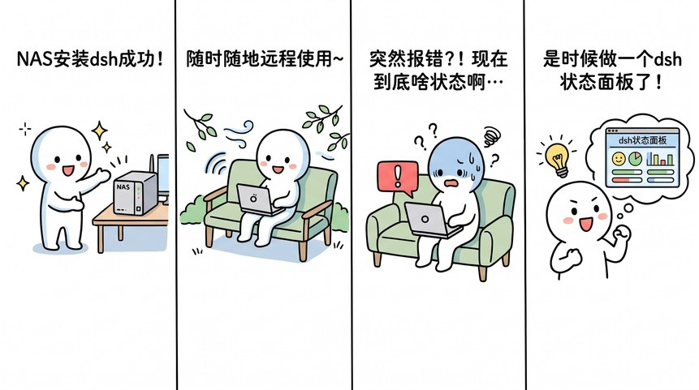
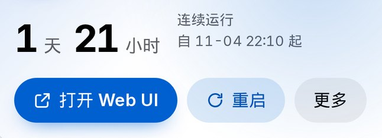
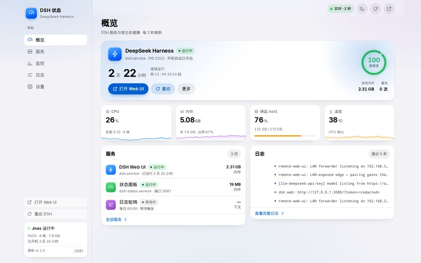
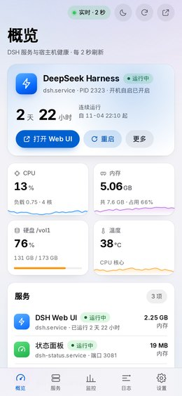
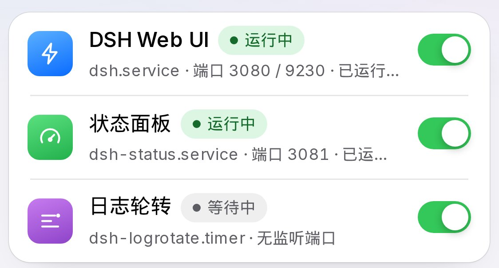

WORK Nº06DSH STATUS PANEL
藏在回环里的
那块面板
它只做一件事：让我在客厅用手机就知道，NAS 上每天在用的那个 AI 会话工具还活着没有。它不替我做事，只让我少开一次电脑。
- 页面
- 5 页
- 依赖
- 0 个
- 断言
- 44 条
- 内存
- 20 MB
快照 2026-11-06 读完约 4 分钟
它是怎么来的

我要的只是「它还活着吗」
我要的不是日志。日志我有的是，journalctl 能给我全部。可我在客厅，手机上，不想读它。

DSH 是我每天都用的 AI 会话工具，跑在 NAS 上。它坏的时候没有症状，就是突然不回话。
要知道它怎么了，我得回书房，开电脑，ssh 进去，敲一遍 systemctl status，再翻 journalctl 最后几十行。才敢判断它是卡住了，是内存吃满了，还是它其实好好的，只是我在等的那个请求特别慢。
这套动作做三次还受得了，做三十次就成了一个念头。我要的东西很小：它活着没有，内存吃了多少，断了能不能在手机上点一下弄活。就这三件。于是我做了这么一块东西，不是一套监控系统。
它长这样
电脑端和手机是同一套界面。左边一条常驻导航，右边一列：四个指标、服务摘要、日志。
手机把导航收成底部五个 tab，内容压成一列卡片，往下滑着看。


一个文件，一个页面
后端一个 Python 文件，只用标准库，每 2 秒读一次 /proc 与 cgroup。
前端一个 HTML，原生 JS，没有框架，也没有构建。它打成一个飞牛应用，桌面上一个图标，点进去就是面板。
它只肯从飞牛桌面进来
面板只听 127.0.0.1。局域网里没有任何一台设备能直连它，这是我定的。
进来的路是这样：先过飞牛桌面那道门，它本来就要账号。再从桌面图标点进来，中间经过一个只做转发的应用，最后才碰到面板。
外侧
回环以内
3082 只做透明转发，自己不做鉴权。面板不认识你是谁，它只认一张券。券是十二位的入口令牌，藏在图标的链接里。
第一次进来，面板把它换成一张七天有效的 Cookie，同时把地址栏里的参数抹掉。不然你截图分享的时候，就把钥匙一起发出去了。令牌换掉，所有发出去的 Cookie 当场失效。
我没有再做一套账号体系，我借用了已经有的那道门。代价直说：局域网里能点开飞牛桌面的人就能用这块面板，它没有第二层口令。
能看，也能点
只能看的面板，看到它挂了还是得去 ssh。所以按钮得有。
服务页上每个服务都能启、能停、能设开机自启，也能重启。
面板自己也在这一页的服务列表里。它重启自己之前会先说一句大约三秒后回来，然后真的回来了，页面自己接上。
重启 DSH 会断掉正在用它的人，点下去之前先想清楚会话里有没有人。

图标是它自己画的
图标是 DeepSeek 自己画的。一块蓝底，一头白鲸，肚子上一个绿点。
比例有点歪，眼睛不圆，尾巴张得太开，按规范它不合格，我第一版想过重画一个。
后来没换。首屏那个和这一节这个小的，是同一张图，谁也没去修边。它效果一般，但它是它自己画的，这个理由就够了。
它现在还不够好
三个地方我明确知道没做好。
只读分享链接能翻到全量日志，给出去的是整页。还没决定要不要裁。
分享地址绑着这台机器的内网 IP，换个网段就退回 127.0.0.1。
没有多机，一台 NAS 一块面板，第二台得再装一遍。